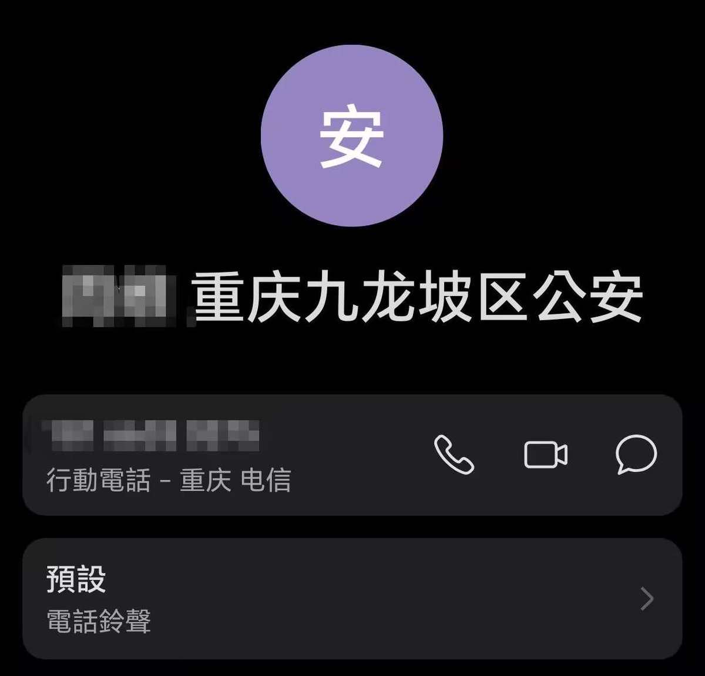
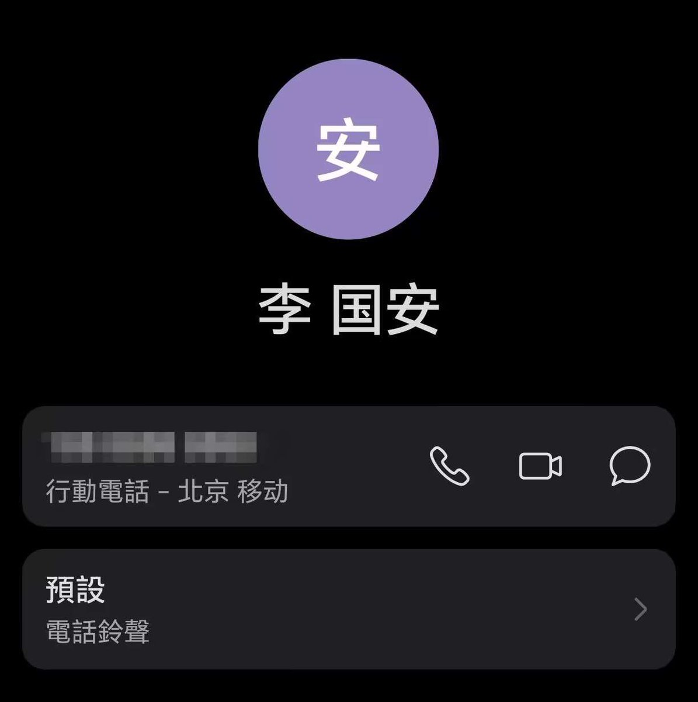

Minokakay（泰补色诺
@Minokakay
想坐牢的欢迎盗用我们的码骗人洗钱，不管你是纯骗子还是真医生单纯洗钱，我们都可以把你的医师执照吊销然后送进去关起来，操你妈的，是真不知道天高地厚是吧？


Minokakay（泰补色诺
@Minokakay
昨日我朋友微信账户收到2400元，付款备注是手术费用，随后有人联系我们声称这是药物订金，要求寄药物，我们联系了付款人，确定对方被骗，黑切商家盗用了我朋友的收款码骗其手术订金，然后找我们下单药物，以此洗钱，我们已经退还受害者全额。记录全部放出，留24h澄清，没人联系明天放无码，呼吁转发。 https://t.co/e0cVMtlSA4